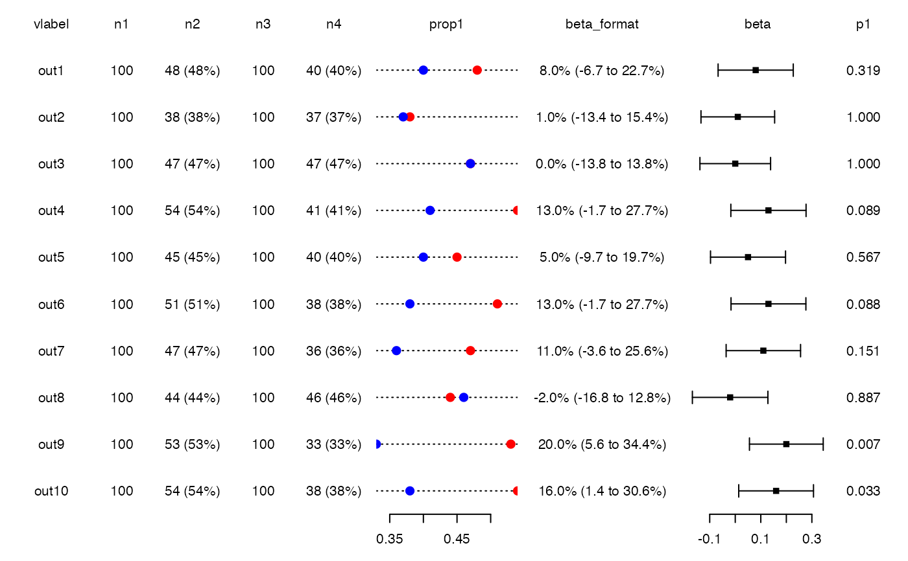

Modify points in stripchart (s) items of a forest plot object (fobj)
Source:R/genfobj.R
s_points.RdPassed to points.
Arguments
- fobj
a forest plot object of class 'fobj'
- item
item to be modified, either a number or the name of the column in fobj$dat. If NULL (the default), all items of type 's' are affected
- pointnr
points to be modified. If NULL (the default), all points are affected.
- ...
options to be passed to
points
Examples
fobj<-genfobj(layout = c("t","t","t","t","t","s2","t","f","t"),
dat = forplotdata_prop,
lwidths = c(0.6,0.4,0.6,0.4,0.6,1.0,1.2,1,0.5))
fobj<-s_points(fobj=fobj, pch = 16, cex=1.5)
fobj<-s_points(fobj=fobj, pointnr = 1, col = "red")
fobj<-s_points(fobj=fobj, pointnr = 2, col = "blue")
plotfobj(fobj)
